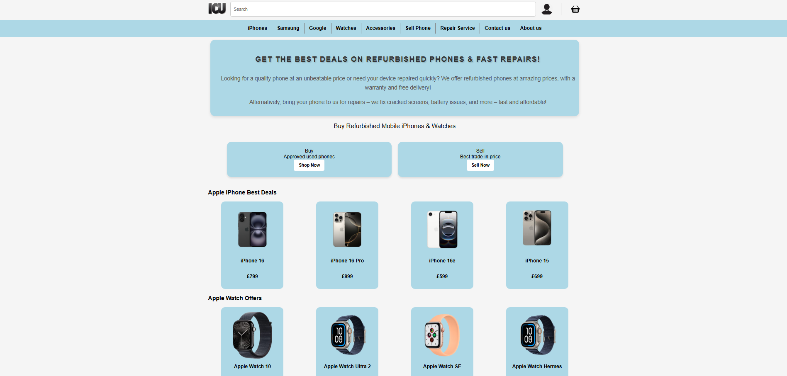
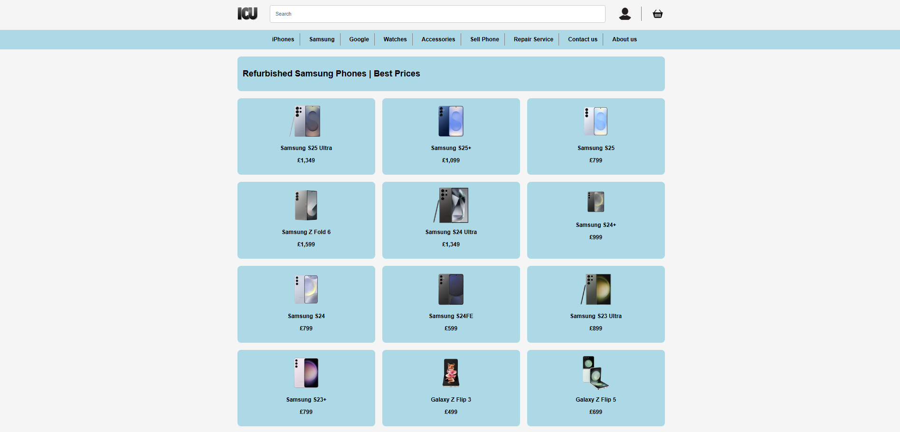

This year I created a website for a business focused on mobile phones. The site includes sections for selling phones, accessories, repair services, and buying used devices. I built it using HTML and CSS, with a clean, user-friendly layout. The site is responsive and works well on mobile devices. This project was part of my IT coursework and helped me develop my frontend skills.

Throughout the development of this project, I focused on improving the user experience by keeping the layout intuitive and accessible. I paid attention to visual consistency and content structure, ensuring that users could easily find products or services. This project also allowed me to better understand how real businesses present their services online and how to translate those needs into a working website layout.